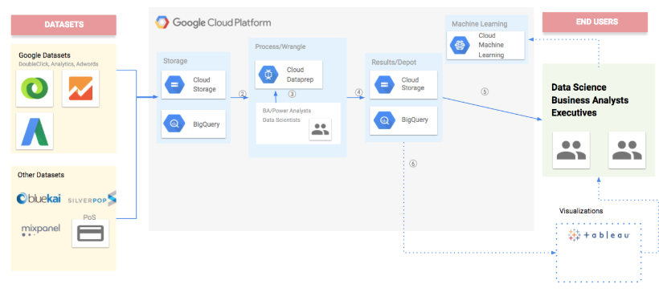

Problem
- Ingesting marketing data from various data sources
- Campaign performance and audience segmentation
- Cross-sell/Upsell, next best action
- Enabling trend discovery to unlock new revenue streams
Challenges
- No centralized Data Science platform for Data Scientists
- Ingesting marketing data from various data sources
- Visualization of cleaned data in R Studio and Tableau
- Backfilling of Campaign Manager data into a consolidated data lake
Tools
-
Google Storage
-

Google BigQuery
-
Google Composer
-

Google Dataflow
-
Google Dataprep
-

Google Cloud ML
-

Tableau
-
Shiny - RStudio
Solution

- Marketing data from multiple data sources were imported into Google Cloud Storage
- Google Double Click campaign data was transferred to BigQuery using Google BigQuery Transfer Service
- MOAT Campaign viewability data containing ad impressions and content views were bulk uploaded on a daily basis
- Audience Segments collected from Oracle Bluekai pixel tags were bulk uploaded on a daily basis
- Marketing Data Pipeline
- Data from Marketing data sources were pushed into Google Cloud Storage
- Source datasets were stored in Google Cloud Coldline Storage to use it only on requirement basis
- Google Cloud Dataflow transformations were used to enrich the incoming data
- Google Cloud Dataprep was used to cleanse the data
- Google Composer was used as a workflow orchestrator to run the marketing data pipelines. Google BigQuery Transfer Service, Google Dataflow jobs and Google Dataprep Jobs constitutes Marketing Data Pipeline and triggered daily by Composer
- Consolidation of multiple marketing data was done using Google Cloud Dataflow
- Marketing Datawarehouse
- Enriched marketing data were stored in Google BigQuery
- Marketing Data Visualization
- R Shiny App and Tableau read the enriched data from Google BigQuery for creating marketing insight dashboards